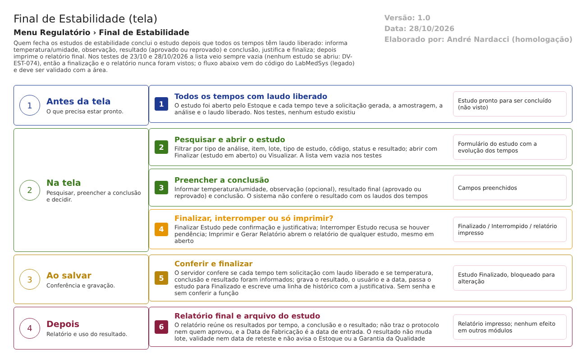

Fluxograma no arquivo 05-final-de-estabilidade.fluxo.json, em 4 fases. Etapas, na mesma ordem do arquivo:
- Etapa 1. Estudo com todos os tempos com laudo liberado (Antes da tela).
- Etapa 2. Pesquisar e abrir o estudo (Na tela).
- Etapa 3. Preencher a conclusão: temperatura/umidade, observação, resultado e conclusão (Na tela).
- Etapa 4. Finalizar, interromper ou apenas imprimir? (decisão) (Na tela).
- Etapa 5. Gravação: confere pendências e campos, pede justificativa e finaliza (Ao salvar).
- Etapa 6. Relatório final e arquivo do estudo (Depois).
Saídas alternativas: pendências no estudo; campos em branco; interromper com justificativa.
Situações e histórico
Situações
| Situação | Quando entra | Próximo passo | Fonte |
|---|---|---|---|
| Em aberto (1) | O Estoque abre o estudo | Finalizar ou Interromper | ESituacaoAcompanhamento.cs:5-9 |
| Interrompido (2) | "Interromper Estudo", com justificativa | Fim (não há reabertura) | FinalEstabilidadeController.cs:278 |
| Finalizado (3) | "Finalizar Estudo", com resultado | Imprimir o relatório final | FinalEstabilidadeController.cs:225 |
O resultado final é guardado como 1 (aprovado) ou 0 (reprovado) (FinalEstabilidadeController.cs:224; AcompanhamentoEstabilidade.cs:61-72).
O que grava no histórico (trilha de auditoria)
- Finalizar: uma linha "alteração" com a justificativa digitada, sem os valores gravados (RN-CQ-T05-005).
- Interromper: uma linha "inclusão" com a justificativa (FinalEstabilidadeController.cs:284).
O que não grava
- O resultado, a temperatura e a conclusão não aparecem como campos no histórico.
- A ciência do Responsável Técnico (arts. 284 e 290).
- Nenhuma gravação foi vista em teste.
Dados
Tabelas do banco
| Tabela | Colunas principais | Chaves e ligações | Fonte |
|---|---|---|---|
| TBL_ACOMPANHAMENTO_ESTABILIDADE | STATUS (1, 2, 3), TEMPERATURA_FINAL (100), OBSERVACAO_FINAL (4000), CONCLUSAO_FINAL (4000), SITUACAO_FINAL (1 aprovado, 0 reprovado), usuário e data da última alteração | Chaves estrangeiras para o item de análise, a regra e o tipo de análise | TBL_ACOMPANHAMENTO_ESTABILIDADE.sql:1-35 |
| TBL_ACOMPANHAMENTO_ESTABILIDADE_DET | TEMPO, QTD_DIAS, ID_SOLICITACAO | Liga ao estudo; a solicitação do tempo, sem chave estrangeira | TBL_ACOMPANHAMENTO_ESTABILIDADE_DET.sql:1-20 |
| TBL_SOLICITACAO_ANALISE e a análise | Situação "laudo liberado" (900) de cada tempo; datas usadas no relatório | — | FinalEstabilidadeController.cs:199-201; ObterRelatorioFinalEstabilidadeService.cs:240-263 |
Leituras e gravações em outros módulos
| Módulo | O que é lido ou gravado | Meio | Fonte |
|---|---|---|---|
| Estoque | Nada ao finalizar. As consultas de lote e almoxarifado existem no código da tela, mas só em partes sem uso (cópia da tela de Acompanhamento) | — | FinalEstabilidadeController.cs:461-536 (não chamada) |
| Principal | Usuário que finaliza; papel de estabilidade (ver a seção de segurança) | Sessão de login e serviço de usuários | FinalEstabilidadeController.cs:219 e 303-317 |
| Produção, Rastreabilidade, Garantia da Qualidade | Nada | — | Sem chamada no código lido |